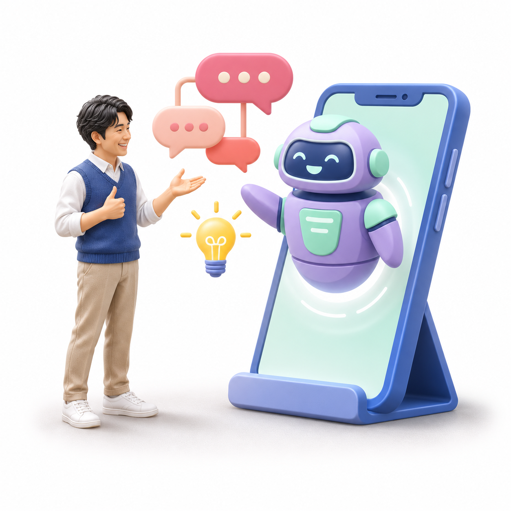
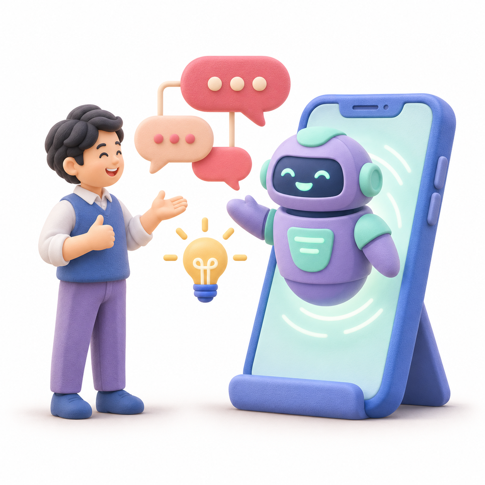
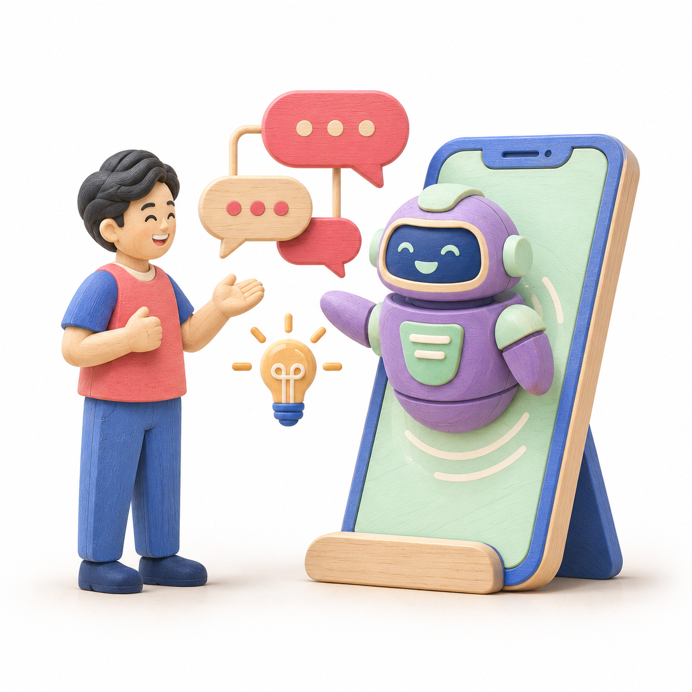
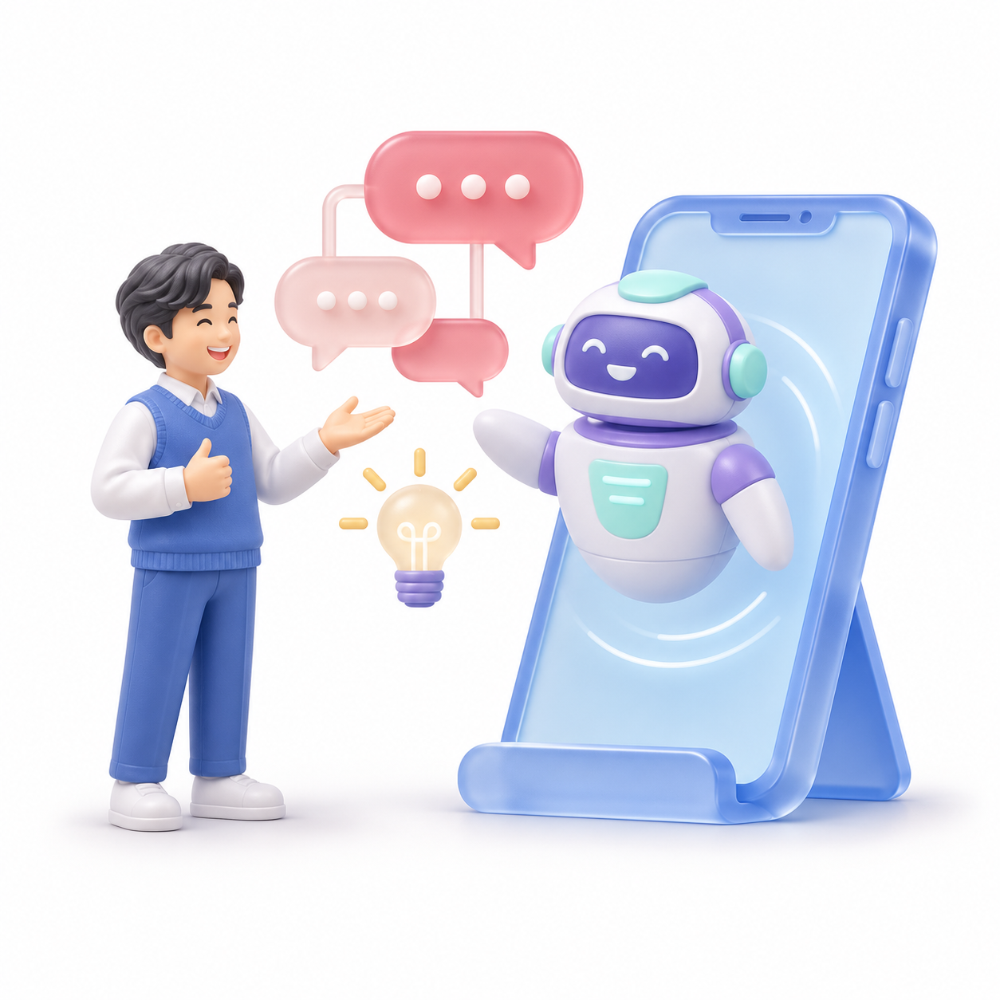

CybozuDays のミニチュア表現を起点にした5つの方向性
話しかけると、文章やアイデアづくりを手伝ってくれる存在です。

パンフレットの質感に最も近い案。精密な人物模型と柔らかな影。

丸みとマットな質感で、はじめてのAIにも親しみやすく。
台座の上にまとめた小さな世界。斜め上から見せる構図。

木目と塗装のぬくもり。手作りの模型のような表現。

半透明のスマートフォンと吹き出し。軽やかな光沢。
 03 / アイソメトリック
03 / アイソメトリック